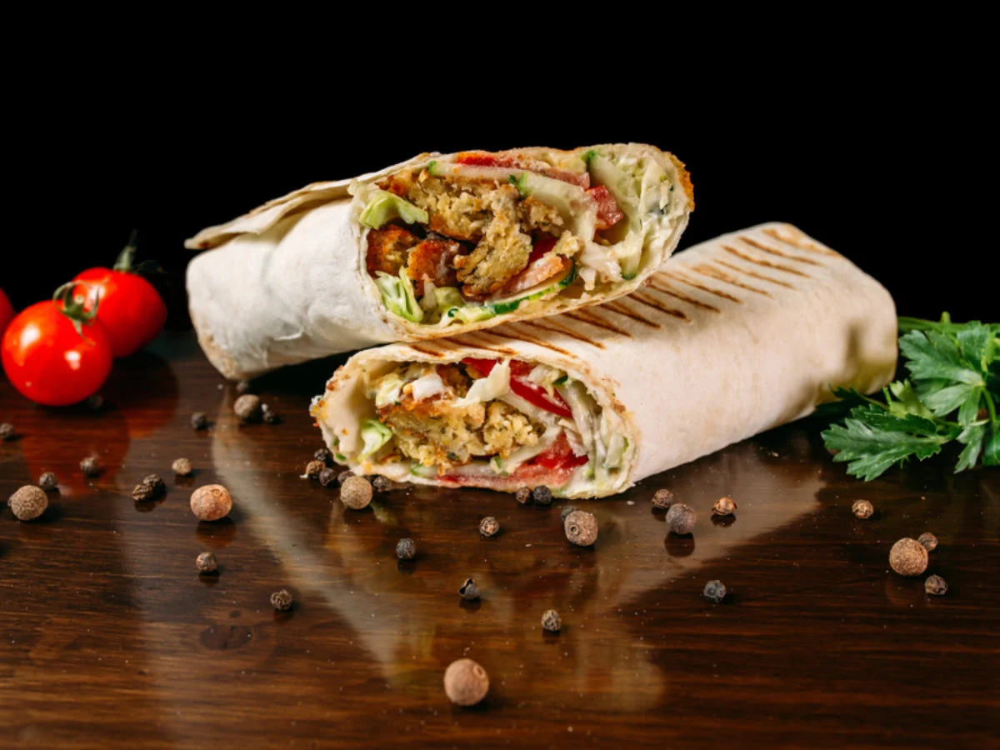

How to make Shawarma

Shawarma is a Middle Eastern dish made with marinated meat (often chicken or beef) that is roasted on a spit and
served in a pita bread wrap with vegetables and sauces.
Shawarma is a popular Middle Eastern dish that has gained worldwide popularity. It is typically made with marinated
meat (chicken, beef, or lamb) that is slowly roasted on a spit, resulting in tender and juicy meat with a crispy
exterior. The meat is then sliced off the spit and served in a warm pita bread wrap with fresh vegetables (lettuce,
tomatoes, onions) and sauces (tahini, hummus, garlic sauce). Shawarma can be found in various versions and styles
across the Middle East, and it is often served as a fast-food item or street food. It has become a favorite food
for many, thanks to its delicious taste and convenient packaging.
Ingredients
- Thinly sliced meat: usually marinated in spices and cooked on a vertical rotisserie.
- Shawarma spice blend: a mixture of flavorful spices that give the meat a distinct Middle Eastern taste.
- Olive oil: used to cook and flavor the meat.
- Lemon juice or vinegar: used to tenderize the meat and add tanginess to the marinade.
- Pita bread: a soft and round bread that serves as a wrap for the shawarma.
- Vegetables: fresh and crispy additions that provide texture and nutrition to the shawarma.
- Sauce: a flavorful and creamy condiment that complements the meat and vegetables.
- Optional toppings: additional ingredients that can be added to customize the shawarma to personal taste.
Steps
- Marinate the meat: Mix the thinly sliced meat with shawarma spice blend, olive oil, lemon juice
or vinegar, and let it marinate for at least 30 minutes to overnight in the fridge.
- Cook the meat: Cook the marinated meat on a vertical rotisserie, grill, or skillet until it is tender
and slightly crispy.
- Prepare the bread: Warm the pita bread in the oven or on a griddle until it is soft and pliable.
- Assemble the shawarma: Spread sauce on the pita bread, add the cooked meat, vegetables, and optional
toppings.
- Roll the shawarma: Roll the pita bread tightly into a wrap, tucking in the ingredients as you go.
- Toast the shawarma: Heat the rolled shawarma on a griddle or panini press to toast the bread and melt
the cheese (if using).
- Serve and enjoy: Cut the shawarma into halves or quarters and serve hot with additional sauce and
toppings on the side.